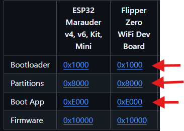
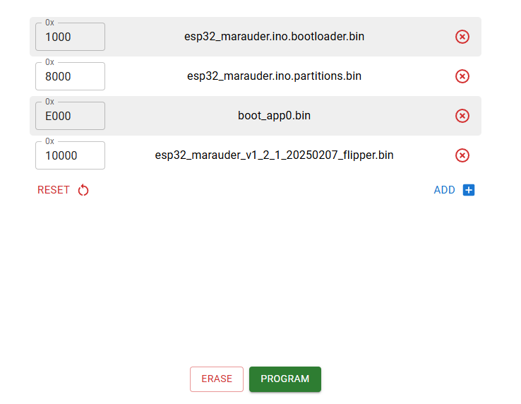
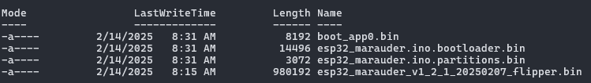

Beginner's Guide To Installing Marauder On The Official Wi-Fi Dev Board For Use With The Flipper Zero¶
This guide aims to show how to set up and install Marauder onto the official Wi-Fi dev board for the Flipper Zero. In most cases, the steps will be similar for other ESP32 based boards, however you will need to select a slightly different firmware build version for your specific board.
There are several different methods listed below to flash the board, ranked in order of complexity. You only need to select one method.
The general steps are:
- If you are running Windows, install the drivers under Prerequisites
- choose one connection method under Connection Methods
- Choose one method to flash it under Flashing Methods
- Install the Marauder companion app
Prerequisites¶
Windows¶
- install the USB-Uart drivers from SiliconLabs by following the below steps:
- navigate to the USB-UART driver page
- click the item titled CP210x VCP Windows
- save the file to somewhere you can easily find it
- extract the zip file you downloaded
- click the CP210x VCP Windows item
- Run and Install CP210xVCPInstaller_x64.exe
Connection Methods¶
Decide how you can connect to your board. There are two choices:
Direct Connection¶
Plug in the USB cable directly to the Wi-Fi dev board.
Flipper Zero GPIO Connection¶
- Insert the Wi-Fi board into the Flipper Zero
- Plug the USB cable into the Flipper Zero directly
- On the Flipper Zero, choose GPIO -> USB-UART Bridge
Once you've decided on one of the above connection styles, proceed to Flashing Methods.
Flashing Methods¶
The methods listed below are ranked from least to most complex. Choose only one method from the list below:
Method 1: FZEE Flasher¶
This tool is probably the simplest of all the methods, as it handles most of the complexity for you.
Requirements: Webserial capable browsers such as Google Chrome or Microsoft Edge. Firefox and Safari are NOT supported.
- Put the Wi-Fi board in flashing mode:
- Hold the BOOT button on the board.
- While continuing to hold the BOOT button, press and release the RESET button for one second.
- Wait 5 seconds, then release the BOOT button.
- Navigate to the FZEE Flasher site
- Click Connect
- Depending on your connection style chosen above, you will see one of these two options to connect to in a new pop up window:
- ESP32-S2
- Flipper flipperNameHere
- Click one of those two connections and hit the connect button
- The text log should identify your board, in this case the official board should be detected as
Chip type ESP32-S2 - At the top of the site under
--- Select Board ---, chooseFlipper Dev Boardif you are using the official Wi-Fi board - Under
--- Firmware ---, chooseMarauder - Under
--- Version ---, chooselatest - Click the PROGRAM button on the site and wait a few minutes for completion
- If all goes well, you should get the message
---> FLASHING PROCESS COMPLETED! - Press and release the RESET button on the Wi-Fi board
The board should now be ready to use with the Marauder companion app.
Method 2: ESP Web Flasher¶
Requirements: Webserial capable browsers such as Google Chrome or Microsoft Edge. Firefox and Safari are NOT supported.
- Navigate to the Marauder releases page and find the most recent version
- under Assets, look for the file with the name that ends in
_flipper.binfor the official Wi-Fi dev board - Click and download this file, saving it to somewhere you can find it
- Navigate to the Marauder Web Updater instructions
-
We will need to download and save the following files under the Flipper Zero WiFi Dev Board column and save them to the same area you downloaded the Marauder .bin file from earlier:
- Bootloader
- Partitions
- Boot App

-
Navigate to the ESP Web Tool
- Put the Wi-Fi board in flashing mode:
- Hold the BOOT button on the board
- While continuing to hold the BOOT button, press and release the RESET button for one second
- Wait 5 seconds, then release the BOOT button
- Click Connect
- Depending on your connection style chosen above, you will see one of these two options to connect to in a new pop up window:
- ESP32-S2
- Flipper flipperNameHere
- Click one of those two connections and hit the connect button
-
Once connected, load the firmware files as follows:
- 0x1000 slot:
esp32_marauder.ino.bootloader.bin - 0x8000 slot:
esp32_marauder.ino.partitions.bin - 0xE000 slot:
boot_app0.bin - 0x10000 slot: the file ending in
_flipper.binmentioned earlier

- 0x1000 slot:
-
Click PROGRAM and wait a few minutes.
- If all goes well, the Output section should say
Done! - Press and release the RESET button on the Wi-Fi board
The board should now be ready to use with the Marauder companion app.
Method 3: ESPtool¶
This method will utilize the official flashing tool from Espressif for flashing ESP32 based boards.
Because the tool is python based, we can leverage a tool called uv for setting up a quick way to manage python tools even if you dont have or want to install python directly on your system.
While esptool and uv work on all operating systems, we will use Microsoft Windows 11 as the OS for the instructions below.
Prerequisites¶
We will need to install the uv tool.
Simply open Powershell and run winget install astral-sh.uv and wait for the setup to complete.
Install Process¶
Once installed continue with the below instructions:
- Navigate to the Marauder releases page and find the most recent version
- under Assets, look for the file with the name that ends in
_flipper.binfor the official Wi-Fi dev board - Click and download this file, saving it into a folder called
marauderfor easy locating - Navigate to the Marauder Web Updater instructions
-
We will need to download and save the following files under the Flipper Zero WiFi Dev Board column and save them to the same folder you downloaded the Marauder .bin file from earlier:
- Bootloader
- Partitions
- Boot App
-
Open up Powershell
- Run
wmic path Win32_SerialPort get DeviceID,Nameand wait 15-30 seconds to get a list of serial devices on your system - Unplug your Flipper Zero or Wi-Fi board from the USB connection and run the above command again, noting which connection disappeared
- Plug your device back in to the USB cable and note down the COM port number
- Put the Wi-Fi board in flashing mode:
- Hold the BOOT button on the board
- While continuing to hold the BOOT button, press and release the RESET button for one second
- Wait 5 seconds, then release the BOOT button
- Using the COM port number you noted down, erase your board by doing
uvx --from esptool esptool --port yourComPortHere erase_flash - You should get
Chip erase completed successfully - Using the
cdcommand, navigate into yourmarauderfolder you made earlier that houses your firmware files - Using
lsyou should see 4 files, similar to these:  - If you see these files, proceed to the run the below multi-line single powershell command, replacing
comXwith your com port andesp32_marauder_xxx_flipper.binwith the actual name of your_flipper.binfile from step 1:uvx --from esptool esptool --chip esp32-S2 ` --port comX write_flash -z ` 0x1000 esp32_marauder.ino.bootloader.bin ` 0x8000 esp32_marauder.ino.partitions.bin ` 0xE000 boot_app0.bin ` 0x10000 esp32_marauder_xxx_flipper.bin - Wait a few minutes for the command to complete
- If successful, you should get
Hash of data verified. Leaving... Hard resetting via RTS pin... - Press and release the RESET button once on the Wi-Fi dev board
The board should now be ready to use with the Marauder companion app.
Cleanup Tip
If you dont want uv sticking around on your system, cleanup is very easy.
Just run uv cache clean to clean up all temp files, then do winget uninstall astral-sh.uv to remove the tool entirely.
Installing The Marauder Companion App¶
The Marauder companion app is avaliable both on the Flipper mobile app and on Flipper Lab. It can be added to your Flipper Zero here: https://lab.flipper.net/apps/esp32_wifi_marauder
If you are unsure how to install applications on your Flipper Zero, see the Official Documentation on how to manage apps.